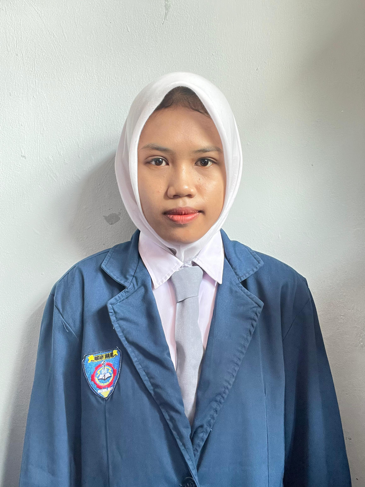

HELLO, I'M
Halo! Saya Nita Tirani, siswi SMKN 1 Pebayuran jurusan Teknik Komputer dan Jaringan yang memiliki ketertarikan pada dunia teknologi, jaringan komputer, dan pembuatan website.

GET TO KNOW ME
Saya Nita Tirani, siswi aktif SMKN 1 Pebayuran jurusan Teknik Komputer dan Jaringan. Saya memiliki semangat untuk belajar, mengembangkan kemampuan, dan mencoba berbagai hal baru di bidang teknologi.
Nama: Nita Tirani
Tempat, Tanggal Lahir:
Bekasi, 03 Agustus 2009
Sekolah:
SMKN 1 Pebayuran
Saya mengambil jurusan Teknik Komputer dan Jaringan atau TKJ. Saya mempelajari jaringan komputer, konfigurasi perangkat, IP Address, Mikrotik, serta dasar pembuatan website.
Saya tertarik dengan teknologi, jaringan komputer, membuat website, mempelajari hal baru, dan mengembangkan kemampuan yang dapat berguna untuk masa depan.
Saya berusaha menjadi pribadi yang bertanggung jawab, teliti, disiplin, mau belajar, dan mampu bekerja sama dengan orang lain.
Saya ingin terus meningkatkan kemampuan di bidang teknologi dan mendapatkan pengalaman yang dapat membantu saya berkembang di dunia industri.
WHAT I CAN DO
Memahami dasar jaringan komputer, instalasi LAN, konfigurasi IP Address, subnetting, dan koneksi antar perangkat.
Membuat website sederhana menggunakan HTML dan CSS dengan tampilan yang rapi dan responsif.
Memahami dasar konfigurasi Mikrotik, pengaturan jaringan, IP Address, dan manajemen hotspot.
Memiliki pengalaman dalam melakukan pengecekan kualitas produk secara teliti dan sesuai standar perusahaan.
MY JOURNEY
PT KOJIMA MANUFACTURING INDONESIA
Selama 6 bulan saya melaksanakan Praktik Kerja Lapangan di PT Kojima Manufacturing Indonesia pada bagian Inspection.
Saya bertugas melakukan pemeriksaan dan pengecekan kualitas produk secara detail, memastikan setiap produk sesuai standar, mencatat hasil inspeksi, serta berkoordinasi dengan tim untuk menjaga mutu produksi.
Pengalaman tersebut melatih saya untuk menjadi lebih teliti, disiplin, bertanggung jawab, dan mampu bekerja sama dalam lingkungan kerja industri.
MY EDUCATION
Teknik Komputer dan Jaringan
TKJ StudentTerus mengembangkan kemampuan di bidang teknologi, jaringan komputer, dan web development.
Keep Learning & GrowingLET'S CONNECT
Terima kasih sudah mengunjungi portofolio saya. Saya senang dapat berbagi perjalanan belajar dan pengalaman saya di bidang teknologi.